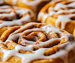

Recetario
Cinnamon Rolls (Rollos de canela)

45 minutos
15 unidades
Agregar a favoritos
Ingredientes:
• Huevos
• Manteca
• Azúcar negra
• Canela
• Harina 0000
• Levadura
• Leche
• Azúcar
2 u
75 gr
100 gr
2 cdtas
300 gr
25 gr
1/2 taza
100 gr
-
1
En un bowl disolvemos la levadura con el azúcar y la leche tibia, agregamos la harina, el huevo y solamente 50g de manteca, que debe estar a temperatura ambiente.
-
2
Amasamos nuestra mezcla enérgicamente, como si fuera un pan, hasta que formamos una masa suave.
-
3
La cubrimos con un paño y la dejamos descansar hasta que duplique su tamaño.
-
4
Una vez que levó, desgasificamos la masa y agregamos el resto de los ingredientes.
-
5
Enrollamos con cuidado y cortamos los rollos.
-
6
Pincelamos con huevo y llevamos al horno.
-
7
Retiramos del horno, dejamos enfriar y ...